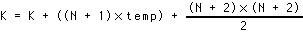
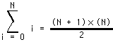

|
Table of Content | Chapter Ten (Part 5) |
|
Table of Content | Chapter Ten (Part 5) |
| CHAPTER
TEN: CONTROL STRUCTURES (Part 4) |
|
| 10.8 -
Performance Improvements 10.8.1 - Moving the Termination Condition to the End of a Loop 10.8.2 - Executing the Loop Backwards 10.8.3 - Loop Invariant Computations |
10.8.4
- Unraveling Loops 10.8.5 - Induction Variables 10.8.6 - Other Performance Improvements |
| 10.8 Performance Improvements | |
The 80x86 microprocessors execute sequences of instructions at blinding speeds. You'll rarely encounter a program that is slow which doesn't contain any loops. Since loops are the primary source of performance problems within a program, they are the place to look when attempting to speed up your software. While a treatise on how to write efficient programs is beyond the scope of this chapter, there are some things you should be aware of when designing loops in your programs. They're all aimed at removing unnecessary instructions from your loops in order to reduce the time it takes to execute one iteration of the loop.
10.8.1 Moving the Termination Condition to the End of a Loop
Consider the following flow graphs for the three types of loops presented earlier:
Repeat..until loop:
Initialization code
Loop body
Test for termination
Code following the loop
While loop:
Initialization code
Loop termination test
Loop body
Jump back to test
Code following the loop
Loop..endloop loop:
Initialization code
Loop body, part one
Loop termination test
Loop body, part two
Jump back to loop body part 1
Code following the loop
As you can see, the repeat..until loop is the simplest of the bunch. This is reflected in the assembly language code required to implement these loops. Consider the following repeat..until and while loops that are identical:
SI := DI - 20; SI := DI - 20;
while (SI <= DI) do repeat
begin
stmts stmts
SI := SI + 1; SI := SI + 1;
end; until SI > DI;
The assembly language code for these two loops is:
mov si, di mov si, di
sub si, 20 sub si, 20
WL1: cmp si, di U: stmts
jnle QWL inc si
stmts cmp si, di
inc si jng RU
jmp WL1
QWL:
As you can see, testing for the termination condition at the end of the loop allowed us to remove a jmp instruction from the loop. This can be significant if this loop is nested inside other loops. In the preceding example there wasn't a problem with executing the body at least once. Given the definition of the loop, you can easily see that the loop will be executed exactly 20 times. Assuming cx is available, this loop easily reduces to:
lea si, -20[di]
mov cx, 20
WL1: stmts
inc si
loop WL1
Unfortunately, it's not always quite this easy. Consider the following Pascal code:
WHILE (SI <= DI) DO BEGIN
stmts
SI := SI + 1;
END;
In this particular example, we haven't the slightest idea what si contains upon entry into the loop. Therefore, we cannot assume that the loop body will execute at least once. Therefore, we must do the test before executing the body of the loop. The test can be placed at the end of the loop with the inclusion of a single jmp instruction:
jmp short Test
RU: stmts
inc si
Test: cmp si, di
jle RU
Although the code is as long as the original while loop,
the jmp instruction executes only once rather than on each repetition of the
loop. Note that this slight gain in efficiency is obtained via a slight loss in
readability. The second code sequence above is closer to spaghetti code that the original
implementation. Such is often the price of a small performance gain. Therefore, you should
carefully analyze your code to ensure that the performance boost is worth the loss of
clarity. More often than not, assembly language programmers sacrifice clarity for dubious
gains in performance, producing impossible to understand programs.
10.8.2 Executing the Loop Backwards
Because of the nature of the flags on the 80x86, loops which range from some number down to (or up to) zero are more efficient than any other. Compare the following Pascal loops and the code they generate:
for I := 1 to 8 do for I := 8 downto 1 do
K := K + I - J; K := K + I - j;
mov I, 1 mov I, 8
FLP: mov ax, K FLP: mov ax, K
add ax, I add ax, I
sub ax, J sub ax, J
mov K, ax mov K, ax
inc I dec I
cmp I, 8 jnz FLP
jle FLP
Note that by running the loop from eight down to one (the code on the right) we saved a comparison on each repetition of the loop.
Unfortunately, you cannot force all loops to run backwards.
However, with a little effort and some coercion you should be able to work most loops so
they operate backwards. Once you get a loop operating backwards, it's a good candidate for
the loop instruction (which will improve the performance of the loop on
pre-486 CPUs).
The example above worked out well because the loop ran from
eight down to one. The loop terminated when the loop control variable became zero. What
happens if you need to execute the loop when the loop control variable goes to zero? For
example, suppose that the loop above needed to range from seven down to zero. As long as
the upper bound is positive, you can substitute the jns instruction in place
of the jnz instruction above to repeat the loop some specific number of
times:
mov I, 7
FLP: mov ax, K
add ax, I
sub ax, J
mov K, ax
dec I
jns FLP
This loop will repeat eight times with I taking on the values seven down to zero on each execution of the loop. When it decrements zero to minus one, it sets the sign flag and the loop terminates.
Keep in mind that some values may look positive but they are negative. If the loop control variable is a byte, then values in the range 128..255 are negative. Likewise, 16-bit values in the range 32768..65535 are negative. Therefore, initializing the loop control variable with any value in the range 129..255 or 32769..65535 (or, of course, zero) will cause the loop to terminate after a single execution. This can get you into a lot of trouble if you're not careful.
10.8.3 Loop Invariant Computations
A loop invariant computation is some calculation that appears within a loop that always yields the same result. You needn't do such computations inside the loop. You can compute them outside the loop and reference the value of the computation inside. The following Pascal code demonstrates a loop which contains an invariant computation:
FOR I := 0 TO N DO
K := K+(I+J-2);
Since J never changes throughout the execution of this loop, the sub-expression "J-2" can be computed outside the loop and its value used in the expression inside the loop:
temp := J-2;
FOR I := 0 TO N DO
K := K+(I+temp);
Of course, if you're really interested in improving the
efficiency of this particular loop, you'd be much better off (most of the time) computing
K using the formula:

This computation for K is based on the formula:

However, simple computations such as this one aren't always possible. Still, this demonstrates that a better algorithm is almost always better than the trickiest code you can come up with.
In assembly language, invariant computations are even trickier. Consider this conversion of the Pascal code above:
mov ax, J
add ax, 2
mov temp, ax
mov ax, n
mov I, ax
FLP: mov ax, K
add ax, I
sub ax, temp
mov K, ax
dec I
cmp I, -1
jg FLP
Of course, the first refinement we can make is to move the loop control variable (I) into a register. This produces the following code:
mov ax, J
inc ax
inc ax
mov temp, ax
mov cx, n
FLP: mov ax, K
add ax, cx
sub ax, temp
mov K, ax
dec cx
cmp cx, -1
jg FLP
This operation speeds up the loop by removing a memory access from each repetition of the loop. To take this one step further, why not use a register to hold the "temp" value rather than a memory location:
mov bx, J
inc bx
inc bx
mov cx, n
FLP: mov ax, K
add ax, cx
sub ax, bx
mov K, ax
dec cx
cmp cx, -1
jg FLP
Furthermore, accessing the variable K can be removed from the loop as well:
mov bx, J
inc bx
inc bx
mov cx, n
mov ax, K
FLP: add ax, cx
sub ax, bx
dec cx
cmp cx, -1
jg FLP
mov K, ax
One final improvement which is begging to be made is to substitute the loop instruction for the dec cx / cmp cx,-1 / JG FLP instructions. Unfortunately, this loop must be repeated whenever the loop control variable hits zero, the loop instruction cannot do this. However, we can unravel the last execution of the loop (see the next section) and do that computation outside the loop as follows:
mov bx, J
inc bx
inc bx
mov cx, n
mov ax, K
FLP: add ax, cx
sub ax, bx
loop FLP
sub ax, bx
mov K, ax
As you can see, these refinements have considerably reduced the number of instructions executed inside the loop and those instructions that do appear inside the loop are very fast since they all reference registers rather than memory locations.
Removing invariant computations and unnecessary memory accesses from a loop (particularly an inner loop in a set of nested loops) can produce dramatic performance improvements in a program.
For small loops, that is, those whose body is only a few statements, the overhead required to process a loop may constitute a significant percentage of the total processing time. For example, look at the following Pascal code and its associated 80x86 assembly language code:
FOR I := 3 DOWNTO 0 DO A [I] := 0;
mov I, 3
FLP: mov bx, I
shl bx, 1
mov A [bx], 0
dec I
jns FLP
Each execution of the loop requires five instructions. Only
one instruction is performing the desired operation (moving a zero into an element of A).
The remaining four instructions convert the loop control variable into an index into A
and control the repetition of the loop. Therefore, it takes 20 instructions to do the
operation logically required by four.
While there are many improvements we could make to this
loop based on the information presented thus far, consider carefully exactly what it is
that this loop is doing-- it's simply storing four zeros into A[0] through A[3].
A more efficient approach is to use four mov instructions to accomplish the
same task. For example, if A is an array of words, then the following code
initializes A much faster than the code above:
mov A, 0
mov A+2, 0
mov A+4, 0
mov A+6, 0
You may improve the execution speed and the size of this code by using the ax register to hold zero:
xor ax, ax
mov A, ax
mov A+2, ax
mov A+4, ax
mov A+6, ax
Although this is a trivial example, it shows the benefit of loop unraveling. If this simple loop appeared buried inside a set of nested loops, the 5:1 instruction reduction could possibly double the performance of that section of your program.
Of course, you cannot unravel all loops. Loops that execute a variable number of times cannot be unraveled because there is rarely a way to determine (at assembly time) the number of times the loop will be executed. Therefore, unraveling a loop is a process best applied to loops that execute a known number of times.
Even if you repeat a loop some fixed number of iterations, it may not be a good candidate for loop unraveling. Loop unraveling produces impressive performance improvements when the number of instructions required to control the loop (and handle other overhead operations) represent a significant percentage of the total number of instructions in the loop. Had the loop above contained 36 instructions in the body of the loop (exclusive of the four overhead instructions), then the performance improvement would be, at best, only 10% (compared with the 300-400% it now enjoys). Therefore, the costs of unraveling a loop, i.e., all the extra code which must be inserted into your program, quickly reaches a point of diminishing returns as the body of the loop grows larger or as the number of iterations increases. Furthermore, entering that code into your program can become quite a chore. Therefore, loop unraveling is a technique best applied to small loops.
Note that the superscalar x86 chips (Pentium and later) have branch prediction hardware and use other techniques to improve performance. Loop unrolling on such systems many actually slow down the code since these processors are optimized to execute short loops.
The following is a slight modification of the loop presented in the previous section:
FOR I := 0 TO 255 DO A [I] := 0;
mov I, 0
FLP: mov bx, I
shl bx, 1
mov A [bx], 0
inc I
cmp I, 255
jbe FLP
Although unraveling this code will still produce a tremendous performance improvement, it will take 257 instructions to accomplish this task[6], too many for all but the most time-critical applications. However, you can reduce the execution time of the body of the loop tremendously using induction variables. An induction variable is one whose value depends entirely on the value of some other variable. In the example above, the index into the array A tracks the loop control variable (it's always equal to the value of the loop control variable times two). Since I doesn't appear anywhere else in the loop, there is no sense in performing all the computations on I. Why not operate directly on the array index value? The following code demonstrates this technique:
mov bx, 0
FLP: mov A [bx], 0
inc bx
inc bx
cmp bx, 510
jbe FLP
Here, several instructions accessing memory were replaced with instructions that only access registers. Another improvement to make is to shorten the MOVA[bx],0 instruction using the following code:
lea bx, A
xor ax, ax
FLP: mov [bx], ax
inc bx
inc bx
cmp bx, offset A+510
jbe FLP
This code transformation improves the performance of the loop even more. However, we can improve the performance even more by using the loop instruction and the cx register to eliminate the cmp instruction:
lea bx, A
xor ax, ax
mov cx, 256
FLP: mov [bx], ax
inc bx
inc bx
loop FLP
This final transformation produces the fastest executing version of this code[7].
10.8.6 Other Performance Improvements
There are many other ways to improve the performance of a loop within your assembly language programs. For additional suggestions, a good text on compilers such as "Compilers, Principles, Techniques, and Tools" by Aho, Sethi, and Ullman would be an excellent place to look. Additional efficiency considerations will be discussed in the volume on efficiency and optimization.
[6] For this particular loop, the STOSW instruction could produce a big performance improvement on many 80x86 processors. Using the STOSW instruction would require only about six instructions for this code. See the chapter on string instructions for more details.
[7] Fastest is a dangerous statement to use here! But it is the fastest of the examples presented here.
|
Table of Content | Chapter Ten (Part 5) |
Chapter Ten: Control Structures (Part
4)
27 SEP 1996